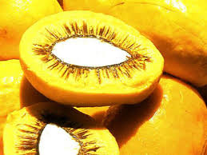
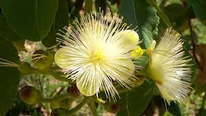
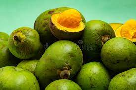
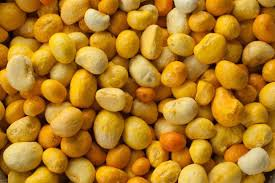

Pequi
O pequi é o fruto do pequizeiro, uma planta nativa do Brasil. Trata-se de um fruto com grande importância econômica, sendo amplamente comercializado nas regiões onde a planta ocorre. O pequi pode ser usado na produção de pratos salgados e também em pratos doces.
Trata-se de um fruto rico em antioxidantes e lipídios, e pesquisas demonstram, entre outros efeitos, ação anti-inflamatória, cardioprotetora e hepatoprotetora do fruto. O pequi destaca-se pela sua casca esverdeada, polpa amarelada e um endocarpo espinhoso, que protege a semente.
Características do Pequi
Pequi, também chamado de piqui, piqui-do-cerrado e piquiá, é o fruto do pequizeiro (Caryocar brasiliense), uma planta típica do Cerrado brasileiro.
Extrativismo Sustentável Orgânico do Pequi, do Ministério da Agricultura, Pecuária e Abastecimento, o pequizeiro ocorre nos seguintes estados: Bahia, Ceará, Distrito Federal, Goiás, Maranhão, Mato Grosso, Mato Grosso do Sul, Minas Gerais, Pará, Piauí, Rio de Janeiro, São Paulo e Tocantins.
O pequizeiro é uma espécie arbórea da família Caryocaraceae. Destaca-se por ser uma planta perene que pode crescer até 15 m de altura e que se desenvolve bem em locais a pleno Sol e com estações seca e chuvosa bem definidas.
O pequizeiro apresenta tronco com casca escura e uma circunferência de 2 m a 3 m. A madeira possui cor parda. As folhas são compostas e trifoliadas, sua coloração é verde e não têm pelos. A lateral das folhas é serreada, denteada ou crenada. As flores do pequizeiro são alvas, e a polinização delas é feita por morcegos, beija-flores e abelhas.
Fruto do pequi
O pequi, como mencionado, é o fruto do pequizeiro. Trata-se de um fruto muito apreciado pela população local, sendo usado na produção de pratos salgados e doces, licores, entre outros produtos. O fruto é também apreciado por animais silvestres, como gambás e gralhas-do-campo.Quando maduro, o mesocarpo interno se separa facilmente do mesocarpo externo. O pequi é um fruto tipo drupa, constituído por: um exocarpo de coloração marrom-esverdeada ou esverdeada; um mesocarpo externo com coloração amarelo-clara; um mesocarpo interno (polpa) com coloração amarelada; um endocarpo espinhoso, que protege a semente; e a semente (ou amêndoa), que possui coloração branca e é revestida por um tegumento fino e marrom.
O nome pequi tem origem na língua tupi, pyqui, que significa “casca espinhosa”, uma referência ao endocarpo espinhoso desse fruto. O fruto pode apresentar de um a quatro caroços.
Beneficíos para a Saúde
- O pequi é um fruto rico em nutrientes, destacando-se por seu alto teor de lipídeos presente na polpa e na semente. Além disso, é rico em antioxidantes, como carotenoides e substâncias fenólicas, e minerais como magnésio, zinco, ferro e cálcio.
- Na medicina popular, frutos e também folhas do pequizeiro são usados no tratamento de problemas respiratórios, hepáticos e oftalmológicos. Além disso, o óleo extraído da polpa de pequi é utilizado contra gripes, resfriados e doenças broncopulmonaresapresentam menos espinhos.
- Apesar de ser muito utilizado popularmente, ainda existem poucos estudos que permitem compreender como o pequi realmente pode agir diante de algumas doenças. Vale salientar, no entanto, que pesquisas demonstraram que o fruto apresenta efeitos antioxidantes, anti-inflamatórios, antigenotóxicos, anticarcinogênicos, hepatoprotetores e cardioprotetores. Devido à presença de ácidos graxos monoinsaturados e carotenoides, o pequi está associado com a prevenção de doenças como câncer, aterosclerose e problemas cardiovasculares.